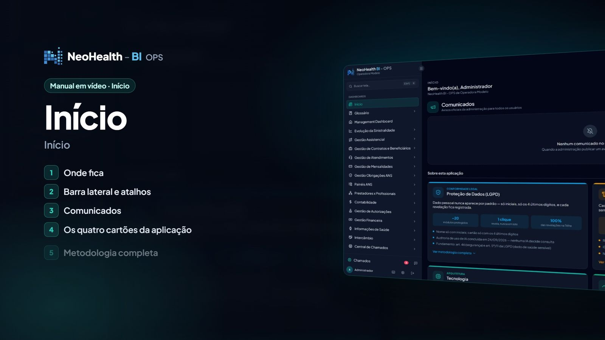
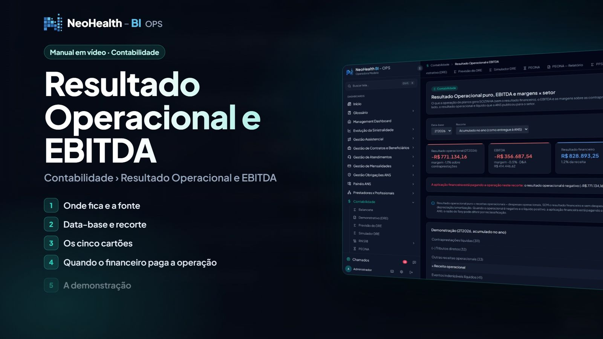
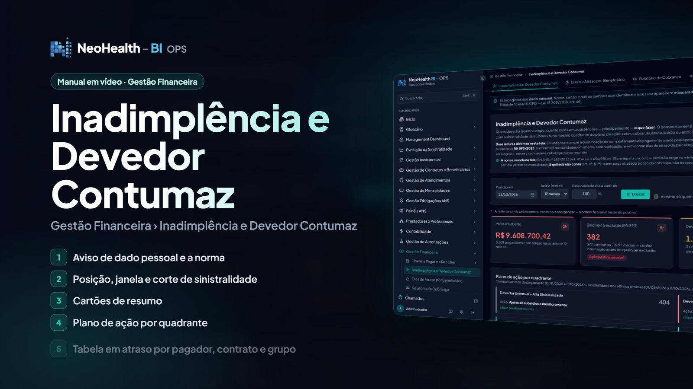
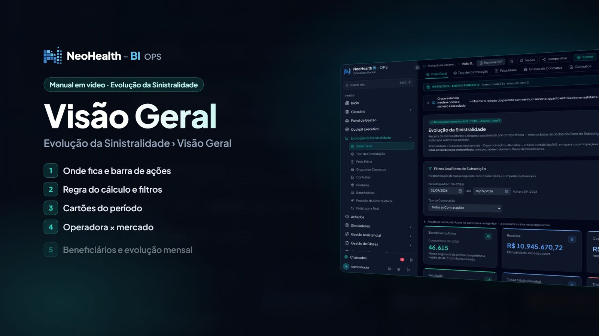
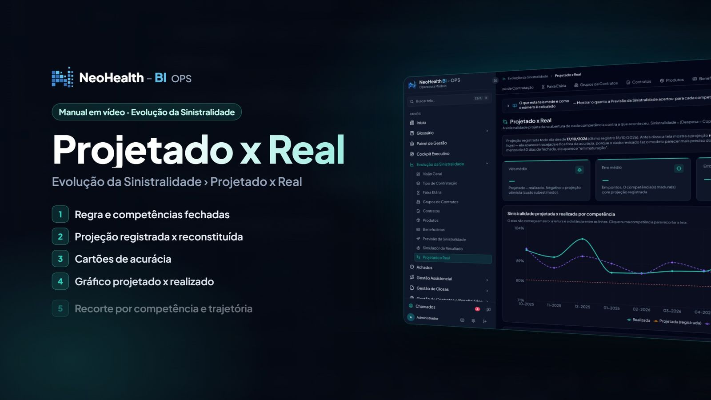
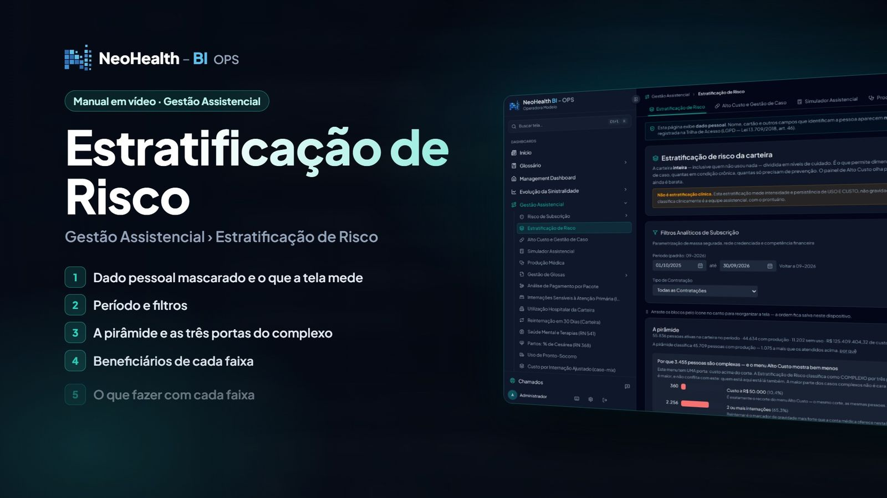
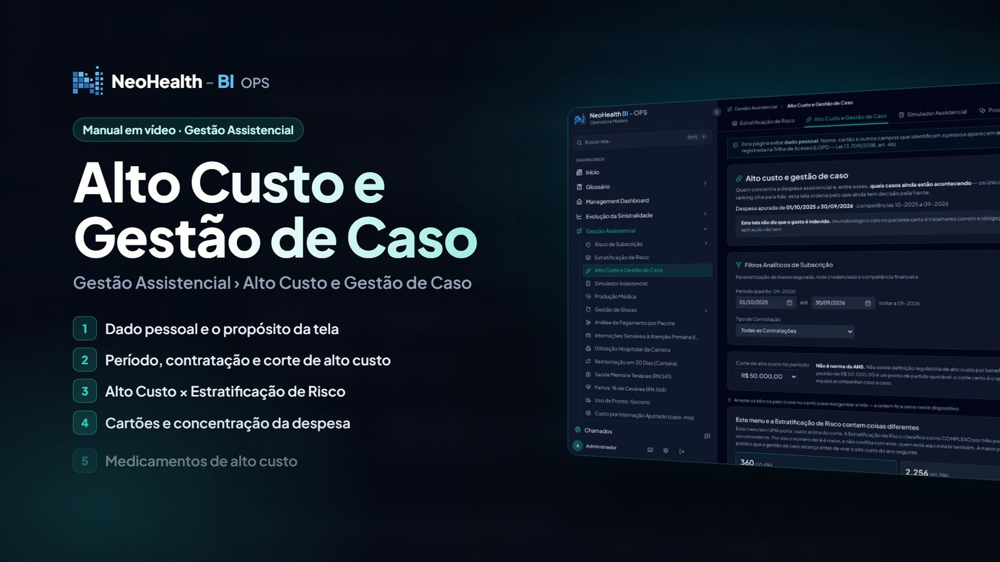
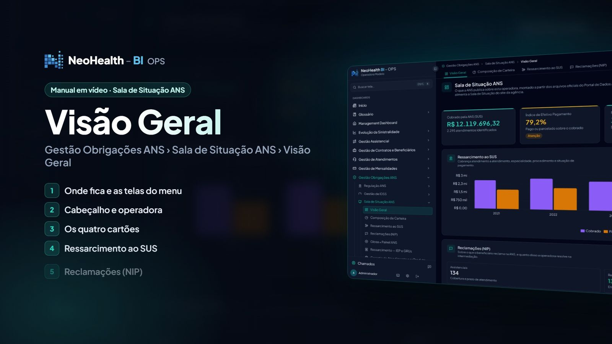
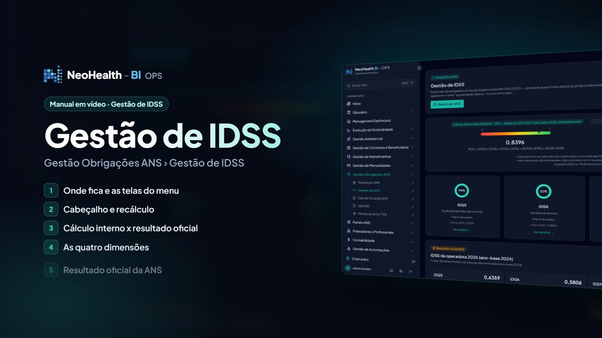

Uma visão integrada
Os módulos conversam entre si: o que aparece no financeiro pode ser investigado na sinistralidade e aprofundado na utilização assistencial.
O NeoHealth BI é a plataforma especializada em inteligência estratégica para operadoras de planos de saúde. Em vez de apenas exibir gráficos, ele organiza os dados da sua operação para apoiar quem precisa decidir.

Dados de saúde suplementar são volumosos, espalhados e difíceis de transformar em ação. O NeoHealth BI concentra a visão financeira, a sinistralidade, a utilização assistencial, as obrigações regulatórias e a análise preditiva em um ambiente único.
Os módulos conversam entre si: o que aparece no financeiro pode ser investigado na sinistralidade e aprofundado na utilização assistencial.
Cada área traz perguntas de negócio claras e recortes por competência, produto e grupo de contratos, para a gestão ir do panorama ao detalhe.
Conceitos como PEONA, ativos garantidores, PTU, glosas e indicadores ANS fazem parte da plataforma, não são adaptações de uma ferramenta genérica.

Uma pergunta que a diretoria faz todo mês
Como a operadora está no mês e no ano? O Cockpit Executivo organiza carteira, receita, despesa assistencial e sinistralidade em uma tela, com acesso ao detalhe quando a gestão precisa aprofundar.
Os valores exibidos nas imagens pertencem à base de demonstração e não representam resultados de operadoras reais.
Estes são desafios comuns na gestão de operadoras. Reconhece algum deles na sua operação?
Esperar o fechamento do mês para entender o que pressionou a sinistralidade deixa pouco espaço para agir.
Financeiro, contabilidade, assistencial e regulatório em planilhas e sistemas separados dificultam uma visão única da operação.
Acompanhar indicadores e obrigações regulatórias ao mesmo tempo em que se gerencia o dia a dia consome equipes técnicas.
Relatórios históricos explicam o passado, mas a gestão também precisa antecipar cenários.
Alto custo, OPME, glosas e utilização exigem cruzamentos que consomem tempo para serem montados manualmente.
Quando o dado chega à diretoria sem contexto, a conversa vira discussão sobre números, não sobre decisões.
O NeoHealth BI é uma aplicação web multi-tenant criada para a gestão de operadoras de planos de saúde. Reúne módulos de financeiro e contábil, sinistralidade, atuarial, beneficiários, assistencial, prestadores, autorizações e auditoria, glosas, intercâmbio PTU e indicadores ANS, além de simuladores, modelos de machine learning e um chat inteligente.
Também oferece alertas e resumos por WhatsApp e e-mail, aplicativo mobile e instalação on-premise. O acesso é controlado por permissões, de modo que cada pessoa vê o que seu perfil permite.
A plataforma acompanha tutoriais em vídeo gravados na base de demonstração "Operadora Modelo", com dados fictícios.

Os módulos financeiro e contábil dão visibilidade a resultado, mensalidades e reajustes, inadimplência e provisões técnicas, para que a gestão acompanhe a saúde financeira com mais contexto.
O objetivo é ajudar a identificar riscos e oportunidades que a inteligência pode ajudar a administrar, sem prometer resultados.


A evolução da sinistralidade pode ser acompanhada por visão geral, comparativo entre projetado e real, previsão e simulação de resultado.
A plataforma ajuda a identificar fatores de pressão; as decisões e seus efeitos dependem da gestão de cada operadora.


O módulo assistencial conecta o uso da rede ao resultado, com recortes de risco, custo e prestadores.


Acompanhe em um só lugar os módulos voltados à agenda regulatória da saúde suplementar.
As normas e seus requisitos devem ser consultados na fonte oficial (gov.br/ans). A plataforma apoia o acompanhamento e não substitui a avaliação regulatória da operadora.


A plataforma inclui modelos de machine learning, previsões e detecção de anomalias, além de simuladores financeiros e assistenciais e de um chat inteligente para consultar a informação.
Previsões são estimativas baseadas em dados históricos e não garantem resultados.

O NeoHealth BI foi concebido para trabalhar com o ERP que a sua organização já utiliza. Oracle e Philips Tasy estão entre as fontes de dados com integração, e a plataforma usa um espelhamento analítico local em DuckDB para a camada de análise.
A informação do seu ERP alimenta os módulos de gestão, para que a análise parta dos dados que a organização já produz.
O espelhamento analítico em DuckDB sustenta consultas analíticas sem exigir que cada análise seja executada diretamente sobre o sistema transacional.
ERP, módulos cobertos e rotinas de carga são definidos em conjunto com a sua organização. [A CONFIRMAR COM O PROPRIETÁRIO: lista de ERPs e forma de integração]
Philips Tasy é marca de seus respectivos titulares. Esta página não indica parceria, certificação ou endosso por parte da Philips.
Informações técnicas resumidas. Documentação detalhada e requisitos de implantação são tratados na etapa comercial.
Aplicação web projetada para operar com múltiplos clientes (tenants) em uma mesma plataforma.
Integração com bases Oracle e com o ERP Philips Tasy.
Espelhamento analítico local em DuckDB para a camada de análise.
Instalação on-premise, no ambiente da operadora.
Recursos de governança e de auditoria para acompanhar o uso da plataforma.
Permissões definem os módulos e telas visíveis a cada perfil. Também há tela de login corporativo (SSO).
Esta página não declara certificações de segurança. Políticas, controles e evidências específicas devem ser solicitadas à equipe comercial. [A CONFIRMAR COM O PROPRIETÁRIO]
Conheça o potencial dos dados da sua operadora. Os benefícios abaixo descrevem capacidades da plataforma, não resultados garantidos.
Dá visibilidade a riscos e oportunidades nas frentes financeira, assistencial e regulatória.
Apoia a investigação de variações, do indicador consolidado ao detalhe.
Previsões e simuladores ajudam a discutir cenários antes da decisão.
Áreas diferentes olham para a mesma base e a mesma definição dos indicadores.
Reúne indicadores e obrigações em módulos específicos da agenda ANS.
Aplicativo mobile e resumos por WhatsApp e e-mail levam a informação a quem decide.
É uma plataforma web de inteligência estratégica para operadoras de planos de saúde. Reúne, em um só ambiente, visões financeiras, de sinistralidade, assistenciais, regulatórias e preditivas para apoiar a decisão de gestores e equipes técnicas.
Não é esse o posicionamento. A proposta é inteligência estratégica especializada em operadoras: os módulos foram pensados para as perguntas da gestão da operação, incluindo simuladores, modelos preditivos e acompanhamento de obrigações regulatórias.
A plataforma trabalha com integração a bases Oracle e ao ERP Philips Tasy. Detalhes de versões, módulos do Tasy e escopo de cada implantação são alinhados na demonstração e na etapa de diagnóstico. [A CONFIRMAR COM O PROPRIETÁRIO]
A plataforma prevê instalação on-premise, ou seja, no ambiente da própria operadora. As opções de implantação disponíveis para o seu caso são tratadas na conversa comercial.
A aplicação é multi-tenant, isto é, projetada para operar com isolamento entre diferentes clientes (tenants). Como isso se aplica à estrutura da sua organização é verificado na demonstração.
O NeoHealth BI conta com recursos de governança, auditoria e controle de acesso, com permissões que determinam quais módulos e telas cada usuário enxerga. O detalhamento técnico é compartilhado na etapa de avaliação.
Não. Previsões e detecção de anomalias ajudam a antecipar cenários e a priorizar a investigação, mas não garantem resultados. As decisões e os resultados dependem da gestão de cada operadora.
Não. Todas as telas exibidas vêm de uma base de demonstração chamada "Operadora Modelo", com dados fictícios. Nenhum dado de cliente é exibido.
Há módulos dedicados a indicadores e obrigações como IDSS, RN 518, RN 623, TISS e SIB, além da Sala de Situação ANS. Para o texto e as regras de cada norma, consulte sempre a fonte oficial (gov.br/ans); a plataforma apoia o acompanhamento, não substitui a análise regulatória da operadora.
Sim, a plataforma conta com aplicativo mobile, e com alertas e resumos por WhatsApp e e-mail. A configuração desses canais é combinada na implantação.
Preencha o formulário desta página ou use a opção de agendamento. Nossa equipe comercial entra em contato para combinar o formato e as áreas de maior interesse da sua operadora.
São usados para responder ao seu contato comercial, conforme a Política de Privacidade desta página, com base no seu consentimento. Você pode pedir a exclusão ou revogar o consentimento a qualquer momento pelo canal de privacidade indicado na política.
Conte um pouco sobre sua organização. Nossa equipe retorna para combinar uma demonstração com foco nas suas prioridades.
Agende uma demonstração diretamente na agenda da equipe comercial.
Espaço reservado para o agendamento (Calendly ou Cal.com).
[A CONFIRMAR] ferramenta, URL e responsável pela agenda. Defina NH_CONFIG.schedulerUrl em script.js.